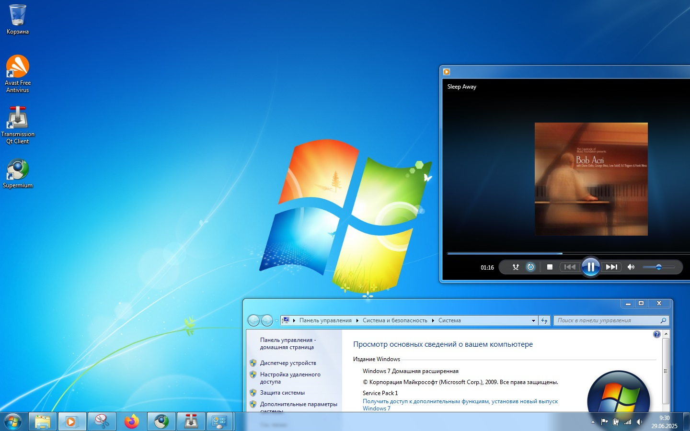

About
Released: 2009
Windows 7 refined the ideas introduced in Windows Vista and focused on performance, usability, and visual polish. It was designed to feel modern and smooth while remaining familiar to existing Windows users.
This version was widely praised for balancing visual appeal with stability and efficiency.
Key Features
- Aero Glass interface
- Improved taskbar functionality
- Faster performance
- Enhanced window management tools
Windows 7 emphasized fluid interaction and visual depth.
Design Philosophy
The design of Windows 7 focused on clarity through depth. Transparency, subtle animations, and soft lighting effects created a sense of layering without overwhelming the user.
The interface aimed to feel modern and refined while staying easy to navigate.
Impact
The term “Aero” stands for Authentic, Energetic, Reflective, and Open. This design language influenced not only Windows 7 but also many other interface designs during the late 2000s.
